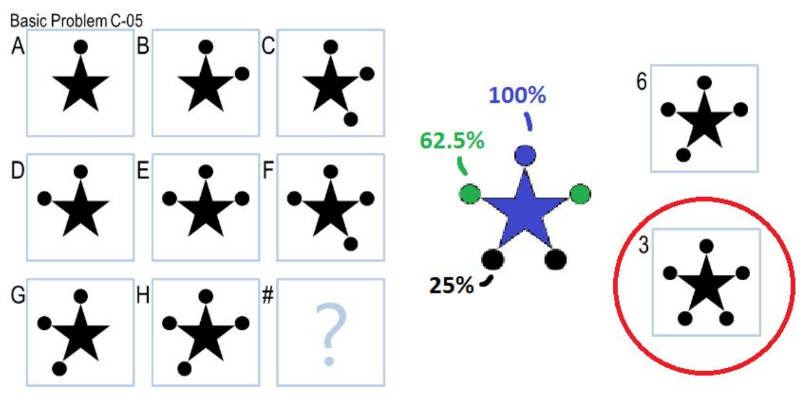
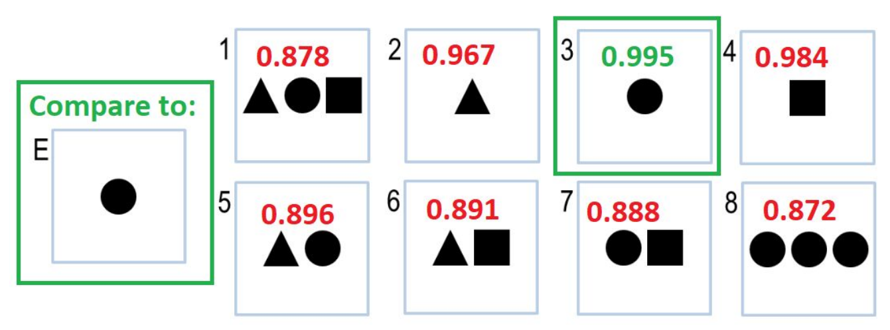
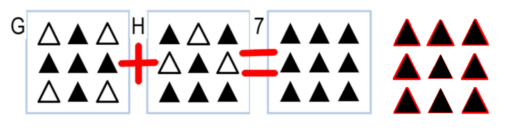

Python AI Agent — Visual Intelligence
Constructed an AI agent using Python and Pillow (Python Image Library) that uses visual inputs to recognize patterns, manipulate input frames, and calculate the probability of the most likely answer to Raven's Progressive Matrices — standardized tests of non-verbal abstract intelligence.
The agent processes each puzzle as a set of images, applies transformations (rotation, reflection, pixel-difference scoring), and ranks candidate answers by how well they complete the underlying visual pattern. No machine learning models — just classical image processing and geometric reasoning.
Language
Python
Libraries
Pillow (PIL)
Domain
AI / Image Processing
Input
Visual puzzle matrices
Sample Outputs




Source code lives in Georgia Tech's private course repository and cannot be shared publicly.